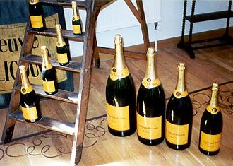

Le champagne, également appelé vin de Champagne, est un vin effervescent français protégé par une appellation d'origine contrôlée dont la réglementation a nécessité plusieurs siècles de gestation. Son nom vient de la Champagne, une région du nord-est de la France. La délimitation géographique, les cépages, les rendements et l'ensemble de l'élaboration du champagne sont les principales spécificités de l'appellation.
L'origine du mot « champagne » provient de l’ancien terme français « canpayne ». Datant du xie siècle, ce mot signifie « grande étendue de terrain plat ». Ce sont alors les nombreux champs ouverts sur des plateaux pâles qui ont inspiré le nom que porte la région même de Champagne6.